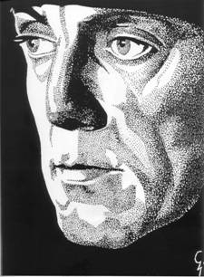
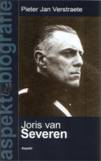
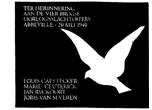
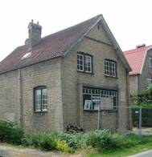

> nieuwsbrief >
2010 - nr 2
Inhoud
70
JAAR LATER:
ZATERDAG 22 MEI 2010 JAARMIS TE MALE (BRUGGE)
& ZONDAG
23 MEI 2010 GROET
AAN HET GRAF TE
ABBEVILLE

Herdenking aan
het Bourgoensche
Cruyce
Zaterdag
22
mei: 11.00 uur: aan
de
toegangspoort tot het Bourgoensche
Cruyce, het voormalige woonhuis van Joris van Severen in de
Wollestraat te
Brugge memoreert een gedenkplaat de namen van de vier Brugse
slachtoffers van
het Bloedbad van Abbeville. Sinds
enkele jaren wordt aldaar door het Brugse Abbeville
Comité jaarlijks een korte herdenkingsplechtigheid gehouden
rond
de datum
van 20 mei. Dit jaar valt die plechtigheid op dezelfde datum als deze
van het
herdenkingsmis te Male, en wel op zaterdag
22 mei om 11.00 uur. Na enkele
korte toespraken – door o.m. een afgevaardigde van het Brugse
Stadsbestuur, van
de Provincie West-Vlaanderen en van het Ministerie van Justitie - wordt
de
plechtigheid besloten met een bloemenhulde aan de gedenkplaat.
Jaarmis
in de kapel van het Slot van Male
Zaterdag
22 mei: 16.00 uur:
Plechtige Gregoriaans gezongen H. Mis met homilie, opgedragen door de
E.H. Gijs van
Ryckeghem,
in de Abdijkapel van het Grafelijk Slot van Male, Pelderijnstraat 14,
8310
Sint-Kruis Brugge, ter nagedachtenis van Joris van Severen, zijn
lotgenoten en
al onze overledenen.
17.30
uur: Receptie,
aangeboden door de Stichting
Joris van
Severen vzw, gevolgd door
de voorstelling van de nieuwe
biografie van Joris van Severen van
de
hand van Pieter Jan
Verstraete en de overhandiging van het 14e Jaarboek
Joris
van Severen aan de aanwezige leden van het Studiecentrum
Joris
van
Severen.
Groet
aan het graf te Abbeville
Zondag
23 mei: afspraak om 11.30
uur aan de toegang tot het kerkhof te Abbeville;
aansluitend
gezamenlijk
bezoek aan
het graf van Joris van Severen en Jan Rijckoort, alwaar
korte
plechtigheid, met neerlegging van een bloemstuk vanwege de Stichting
Joris van Severen. 1940-2010:
tussen beide jaartallen liggen 70 jaren. Zeventig jaren waarop elk jaar
nu eens
meer, dan weer minder mensen zich omstreeks de datum van 20 mei rondom
het
dubbelgraf van Joris van Severen en Jan Rijckoort schaarden in het
teken van
gedenken en herdenken Decennialang waren dat allereerst de getrouwen
van het
Verdinaso, maar hun generatie is dusdanig uitgedund dat jongere
generaties
stilaan die piëteitsvolle taak op zich dienen te nemen. We hopen
er in
2010 –
70 jaar later – nog eens met velen te zijn om die zinvolle traditie te
bestendigen.
Steun en info
Wenst u op de hoogte gehouden te worden van
de
activiteiten van de Stichting Joris van Severen vzw,
dan kunt u
zich wenden tot de voorzitter Luc Seynaeve (telefoon 0475-254949 –
e-adres: lucseynaeve@hotmail.com)
of tot het
secretariaat, Meensesteenweg 191, 8870 Izegem. Steun voor de Stichting
en de
door haar ontplooide initiatieven kunt U overmaken op het
rekeningnummer van de
Stichting: 465-0226721-64.
Voor het bezoek aan het graf te Abbeville
op zondag 23
mei maken we gebruik van de ‘samen-rijden’-formule op kostendelende
basis. Dit
initiatief wordt gecoördineerd door Paul Seynaeve tot
uiterlijk 17 mei. Na deze datum kunnen
ter zake geen bindende afspraken meer gemaakt worden.Paul
Seynaeve - Stichting
Joris van Severen, 051/31.18.49
(H. Mis en programma te Brugge op zaterdag en coördinatie
‘carpooling’
op
zondag). E-post: paul.seynaeve@arbo-moeskroen.be
MEDEDELINGEN
Hernieuwen
ledenbijdrage 2010
Wie
totnogtoe naliet zijn
bijdrage te vereffenen wordt daaraan bij deze herinnerd. In ruil voor
een
ongewijzigde basisbijdrage van 25 € verzekert u zich ook in
2010 van een
abonnement op onze Nieuwsbrief Joris van
Severen en van het – reeds 14e – Jaarboek
Joris van Severen – zijn persoon, zijn gedachten, zijn invloed, zijn
werk. Als
steeds hopen we er andermaal op dat eenzelfde aantal leden spontaan
deze
basisbijdrage afronden tot het ronde bedrag van 30€. Zij immers
maken
het ons mogelijk om extra-initiatieven te ontwikkelen, naast de Nieuwsbrief en het Jaarboek. De
penningmeester wijst er op dat de prijs van het jaarboek
nà verschijnen (= vanaf einde mei) 30 € bedraagt.
In april 2010 verschijnt bij de Nederlandse
uitgeverij Aspekt, in de reeks
biografieën, van de hand van Pieter Jan Verstraete, een
nieuwe biografie over Joris
van Severen. Voor de leden van ons Studiecentrum Joris van Severen
kunnen
wij deze uitgave tegen een gunstige prijs aanbieden, indien ze samen
met ons
Jaarboek besteld wordt. De ledenbijdrage (voor jaarboek en
biografie)
beloopt in dit geval 37 €. Beide boeken worden u dan medio mei
samen
toegestuurd.
PS: afzonderlijk besteld beloopt de prijs van
de
biografie 16,95 € + 3 € verzendkosten = 19,95 €. U doet er dus alle
voordeel
mee ze samen met uw ledenbijdrage te bestellen.
Jongerenbezinning
aan
het graf
van Joris van Severen
Dit jaar is het 70 jaar geleden zijn dat
Joris van
Severen te Abbeville, op de zuidgrens van de oude Nederlanden, door
Franse
soldaten in paniek vermoord werd. Een eerste oorlogsmisdaad in een
lange reeks
van velen die nog zouden volgen. Elk jaar wordt dit nog in de maand mei
– in
2010 op zondag 23 mei, zie hoger - door een slinkend aantal
getrouwen herdacht
door
een bezoek aan de graftombe die door Louis Gueuning en de zijnen werd
opgericht.
Mei is echter de maand dat studenten al
volop in hun
bloktijd zitten en bijgevolg verstek dienen te geven. Om de jongeren
ook de
kans te geven Van Severen te gedenken, werd besloten t.g.v. deze wel
bijzondere
verjaardag een Jeugdbezinning
aan het
graf van Joris van Severen in te richten.Opgelet! Dit
betekent géén
afscheuring van
de
traditionele meibedevaart die ingericht wordt door de Stichting Joris
van
Severen. Integendeel! Wij blijven die steunen.Alleen willen wij de
jongere generatie,
studenten maar
vanzelfsprekend ook onze arbeidersjeugd, de kans geven hùn
eerbetoon te
uiten.
Noteer alvast volgende concrete gegevens:
Datum: zaterdag, 27 maart 2010. Afspraak:
om 11.30 uur
aan de ingang van de stedelijke begraafplaats, rue de la Chapelle te
Abbeville.Wij komen in persoonlijke naam ons bezinnen
over de
opdracht die Joris van Severen ons ook in deze tijden nog geeft, niet
om
propaganda te maken voor een of andere vereniging. Daarom: Slechts
één
bloemstuk als uiting van onze eenheid rondom zijn persoon, Geen
vlaggen,
uniformen, uiterlijke kentekens. Wél: soberheid, stijl, stille
eerbied.
PS: wanneer u dit leest is dit
gebeuren uiteraard reeds verleden tijd. We nemen ons voor er op terug
te komen
in de volgende Nieuwsbrief.
Jaarboek
Joris van Severen 14 (2010)
 In deze
jaarboekaflevering komt vooreerst Joris
van Severen
zelf aan het woord.
Zijn oorlogsdagboek Die vervloekte oorlog
eindigde op 11 november 1918, de dag van de Wapenstilstand. Vorig
jaar
namen we zijn dagboeknotities op van 12 november tot einde 1918. Dit
jaar
brengen we de integrale
dagboeknotities
van het jaar 1919. In dat jaar hervat hij zijn studies aan de
Gentse
universiteit – van eind mei tot eind juni - onderbroken echter door een
nieuwe
militaire inzet in de Nederrijnstreek. Ook deze dagboekbladzijden
documenteren
en illustreren overigens in heel wat de aanloop tot wat uiteindelijk
zijn
tijdschrift Ter Waarheid zou worden, zoals geschetst in
het eerste
deel van Romain Vanlandschoots bijdrage in ons jaarboek van twee jaar
terug.
In deze
jaarboekaflevering komt vooreerst Joris
van Severen
zelf aan het woord.
Zijn oorlogsdagboek Die vervloekte oorlog
eindigde op 11 november 1918, de dag van de Wapenstilstand. Vorig
jaar
namen we zijn dagboeknotities op van 12 november tot einde 1918. Dit
jaar
brengen we de integrale
dagboeknotities
van het jaar 1919. In dat jaar hervat hij zijn studies aan de
Gentse
universiteit – van eind mei tot eind juni - onderbroken echter door een
nieuwe
militaire inzet in de Nederrijnstreek. Ook deze dagboekbladzijden
documenteren
en illustreren overigens in heel wat de aanloop tot wat uiteindelijk
zijn
tijdschrift Ter Waarheid zou worden, zoals geschetst in
het eerste
deel van Romain Vanlandschoots bijdrage in ons jaarboek van twee jaar
terug.
Uit de dagboekbladzijden van 1919 blijkt
hoezeer Van Severen op de hoogte
was van de toenmalige actualiteit. Soms beperken zijn notities zich tot
geheugensteuntjes, maar vaak ook spuit hij breedvoerig zijn gal over
het reilen
en zeilen van zijn medestrijders binnen de Vlaamse Beweging – en tegen
de
Belgische on-staat.
Ook zijn getormenteerde liefdesrelatie met
Germaine Duccobu biedt stof
tot menige zelfbespiegeling, waarbij de “ups en downs” elkaar opvolgen
als eb
en vloed. Goethes
“Himmelhoch jauchzend, Zum Tode betrübt,
Glücklich ist die Seele die liebt” (Egmont)
is nooit ver weg.
Alsnog blijvend, als reeds ingezet in zijn
oorlogsdagboek Die vervloekte oorlog, blijkt zijn
sympathie voor het bolsjewisme te zijn, dat hij ervaart als een
bevrijdingsbeweging, als een alternatief voor, een afrekening met het
kapitalisme en het imperialisme van de grootmachten. Hij ziet het
bolsjewisme
als “een slag van de grote slinger der rechtvaardigheid Gods, tegen de
rijken.
Daarom kan ik het niet bevechten, integendeel. Als men aan de kant van
de armen
staat, heeft men altijd gelijk” (4 juni 1919).
We zijn er ons van bewust dat ook deze
dagboekbladzijden mogelijkheden te
over bieden om bepaalde fragmenten uit hun context te isoleren (en
aldus hun
draagwijdte te vervalsen), teneinde er denigrerende commentaren over te
spuien.
Dit procedé – men zij het steeds indachtig – vertelt evenwel
meestal
méér over
de geborneerdheid van de commentator dan wel over Joris van Severen
zelf.
Aansluitend op Van Severens Dagboek 1919,
waagt Maurits Cailliau
zich aan een
confronterende benadering van de
verhouding tussen de dominicaan pater Julius
Callewaert en Joris van Severen. Uitgangspunt daarbij is
Callewaerts
essaybundel Aristocratie. Daarbij
worden alle nog terug te vinden sporen onderzocht, waarbij echter meer
gegist
dan wel geconcludeerd kon worden.
Verder is dit veertiende jaarboek in hoge
mate schatplichtig aan ons
effectief bestuurslid, de historicus Ruud
Bruijns. Als in de vorige jaarboeken spitst hij ook nu weer zijn
aandacht
toe op de Noord-Nederlandse tak van Van Severens beweging. Hij brengt
ons
vooreerst een grondige casestudie over de
Utrechtse afdeling van het Verdinaso en vervolgens – als
tegenhanger van
wat Alain Mouton
en Jef Werkers daaromtrent voor Vlaanderen/België publiceerden -
een
Nederlands
luik over het
Verdinaso-Nederland en zijn
impact op de hogere maatschappelijke kringen aldaar.
Dat daarbij
niet
voorbijgegaan kan worden aan de voorname rol van Ernst Voorhoeve in dit
gebeuren hoeft geen betoog.
Aansluitend komt Henri Bruning
(1900-1983) aan het woord. Hij kreeg recent ook zijn lemma op de
internetencyclopedie Wikipedia, waar
we over hem het volgende meegedeeld krijgen: “De katholieke schrijver Henri Bruning
debuteert in
1924 met de dichtbundel De Sirkel. Sinds 1934 is hij actief in
de
katholiek-solidaristische
beweging Verdinaso.
Deze organisatie was in 1931 in Vlaanderen
door Joris
van Severen opgericht.
(…) Regelmatig schrijft hij in De
Christofore
en hij staat vóór de Tweede Wereldoorlog bekend als de
schrijver van
Subjectieve normen (1936) en Verworpen christendom
(1938). Deze
grootopgezette en geïnspireerde opstellen over actuele religieuze
en
culturele
problemen maken van Bruning een der meest bezielde en toonaangevende
schrijvers
onder de jongere katholieke auteurs.” Einde citaat. Omwille van zijn
collaboratie tijdens de
Tweede Wereldoorlog werd hem (Bruning) publicatieverbod opgelegd en
trachtte men hem monddood te maken. In
1954 poogde
Bruning de omerta rond zijn persoon te doorbreken met zijn essay Een ander spoor…
in het belangwekkende
tijdschrift Maatstaf. Daarin zet hij
uiteen hoe en waarom ook in Nederland een vleugel van het Verdinaso in
de collaboratie
belandde. Maar vooral verduidelijkt Bruning in dit verhaal het hoe en
waarom
van zijn toetreding in 1934 tot het Verdinaso en de fascinatie die
Joris van
Severen en zijn beweging op hem uitgeoefend hebben. Zijn
eersterangs-getuigenis
meenden we u niet te mogen onthouden.
Het dit jaarboek afsluitend gedicht in
Memoriam Joris van Severen werd ontleend aan de door Antoon
van de
Plaetse
in 1942 uitgegeven verzamelbundel Het
lied der Geuzen. De auteur Fernand
Pauwels (pseudoniem Marnix van Gavere) was gehuwd met Jeanne van
Severen,
de zus van Joris.
Rest nog andermaal onze vaste corrector te
danken voor de tijd en de zorg
die hij besteedde aan het taalkundig nazicht van deze uitgave. Tot
zover een
inhoudsoverzicht van ons 14e jaarboek.
Initiatief
van het Abbeville Comité
Op 10 oktober 2009 richtte
het
Brugse Abbeville Comité een brief aan de huidige Minister van
Justitie:
na de
Stad Brugge en de Provincie West-Vlaanderen, wordt het stilaan tijd dat
ook de
Belgische Staat er blijk van geeft de gebeurtenissen van mei 1940, die
tot het
drama van Abbeville hebben geleid, te betreuren – aldus de teneur van
de brief
die we hieronder in extenso weergeven.
Maurits Cailliau
Brugge,l0 oktober 2009
Aan de heer. Stefaan de Clerck, Minister
van Justitie
Geachte heer Minister van Justitie,
Betreft: herdenking
oorlogsslachtoffers Abbeville:
Het zal U niet onbekend zijn dat er tijdens
de
meidagen van 1940 heel wat ongerechtvaardigde aanhoudingen hebben
plaatsgevonden.
Op 10 mei 1940 bevonden zich in de
inmiddels
afgebroken Brugse gevangenis ”Pandreitje” 78 personen, die zonder
motivering en
zonder enige ondervraging aangehouden waren door de plaatselijke
politiediensten, op bevel van de toenmalige auditeur-generaal bij de
Krijgsraad, Ganshof van der Meersch.
Deze gevangenen werden op transport gezet
naar het
Noord-Franse Abbeville en er overgeleverd aan Franse militairen. Zij
werden
ondergebracht in de kelder van de plaatselijke muziekkiosk Deze Franse
militairen wisten zelf niet eens met wie zij te doen hadden en wat zij
met deze
gevangenen moesten aanvangen.
Na onderling beraad werden deze gevangenen
op een
mensonwaardige manier behandeld. Op 20 mei begon een moordpartij:
zonder enige
vorm van proces werden 21 gevangenen op zeer brutale wijze omgebracht.
Onder
hen bevonden er zich vier Bruggelingen: Louis Caestecker, Maria
Ceuterick, Jan
Rijckoort en Joris van Severen.
Uiteindelijk liet een Franse officier de
moordpartij
stoppen. Nadien bood hij namens de Franse regering zijn
verontschuldigingen
aan. In de loop der jaren hebben vele staten, die voorheen met elkaar
in
oorlogsconflict lagen, aan elkaar en aan de slachtoffers
verontschuldigingen
aangeboden.
In Brugge werd aan het College van
Burgemeester en
Schepenen destijds een aanvraag gericht om de namen van de vier Brugse
oorlogsslachtoffers te vermelden op de marmeren gedenkplaten voor de
slachtoffers van de beide wereldoorlogen in de Karthuizerinnenstraat.
Deze
vraag werd voor advies overgemaakt aan de Brugse vaderlandslievende
verenigingen. Dezen bleken niet vatbaar voor enig begrip voor die
“andere”
oorlogsslachtoffers.
De Abbeville commissie ad hoc heeft
vervolgens
zelf een herdenkingsplaat aangebracht in de toegangspoort tot het
”Bourgoensche
Cnuyce”, Wollestraat 35,
in
de nabijheid van de officiële gedenkplaten. De eigenaar van deze
toegangspoort,
de heer Tom Allewaert, had dit spontaan aangeboden.
Enkele jaren geleden heeft
het Brugse
stadsbestuur
haar schepen J.M. Bogaert afgevaardigd om een toespraak te houden
tijdens de
jaarlijkse herdenkingsplechtigheid voor de slachtoffers van het
bloedbad in
Abbeville. Namens de Stad Brugge werden verontschuldigingen aangeboden
en werd
een bloemenkrans neergelegd. Op 16 mei 11. heeft de heer Paul Breyne,
gouverneur
van West-Vlaanderen, zijn deelname betuigd door persoonlijk de
plechtigheid bij
te wonen en er een bloemenkrans te deponeren. We voegen hierbij een
foto van
deze indrukwekkende herdenking. Vandaag blijft nog één
instantie achterwege
om haar
verontschuldigingen aan te bieden aan deze gedeporteerden en vooral aan
de 21
personen die vermoord werden: het ministerie van Justitie.
Het Abbeville Comité hoopt dat U,
mijnheer
de
Minister, ter zake een initiatief zult nemen ter gelegenheid van de
herdenkingsplechtigheid
van volgend jaar. Wij nodigen U alvast uit om aanwezig te zijn op deze
plechtigheid, die zal plaatsvinden op zaterdag 22 mei 2010 om 11 uur,
in het ”Bourgoensch
Cruyce’, Wollestraat 35 te Brugge. Om U nog een beter inzicht te
verschaffen
in het drama
van Abbeville, voegen wij als bijlage het boek Het Drama
van Abbeville van Tim Trachet, journalist en sinds 2000
documentairemaker bij de VRT. In 2007 heeft de VRT een documentaire
gewijd aan
het bloedbad van Abbeville.
Mijnheer de Minister, wij danken U bij
voorbaat voor
de aandacht die U aan ons verzoek zult besteden en voor elk initiatief
dat U
zult willen nemen om recht te doen aan de oorlogsslachtoffers van
Abbeville.
Met bijzondere hoogachting, namens het
Abbeville
Comité,
Tom
Allewaert – Marc de Vriese – Luc Seynaeve –
Guido van In – Gaby Warris.
Woonhuis
Joris
van Severen te Sint-Michiels
Het
voormalige woonhuis van Joris van Severen te
Sint-Michiels/Brugge blijkt nog steeds te bestaan. Getuige bijgaande
foto, ons
bezorgd door R. Desseyn. Onderstaande gegevens met betrekking tot deze
woning
ontleenden we aan de onderaan vermelde internetbron.
Beschrijving:
Canadastraat
nr. 3 (destijds Veldweg of ook
Joe Englishpark genoemd, zoals blijkt uit aan hem gerichte
briefwisseling van
toen). Voormalige kunstenaarswoning van Joe English (1882-1918), cf. de
natuurstenen plaat aan de voorgevel met opschrift "Hier leefde en / was
werkzaam / Joe English / kunstschilder / geboren 5/8/1882 / † 31/8/
1918 te
Vinkem / Als zinnebeeld van / dien en de kunst / werd hy begraven / in
de
crypte van den / Yzertoren" gesigneerd "V.O.S. Brugge". Gebouwd
in 1911 naar een ontwerp van architect Huib Hoste
(Sint-Michiels-Brugge). In
1938 bewoond door Joris van Severen (1894-1940), leider van het
Verdinaso.
Deze kunstenaarswoning is
een landhuis opgetrokken in locale gele baksteen met staand verband
onder
pannen zadeldak. Aan het eenvoudig hoofdvolume zijn twee kleinere
volumes
gekoppeld; de ingang onder lessenaardak en aan de achtergevel een
kleine annex
met berging onder zadeldak. De gevels zijn evenwichtig en sober
opgebouwd met
weinig decoratieve elementen. Een groot raam in de voorgevel tussen
bescheiden
steunberen voorziet het atelier van noordelijk licht. Het houten
schrijnwerk
van de voorgevel is niet meer oorspronkelijk; op de oude zwart-wit
opname zijn
duidelijke nuances merkbaar in de raamindeling, ook de luiken zijn niet
meer
aanwezig. In de achtergevel en zijgevels zien we wel nog de drukke
verdeling
met kleinhouten, hier gaat het mogelijks nog om de eerste ramen. De
tuinmuur en
hekwerk zijn ook niet meer origineel. Het atelier, de keuken en de
leefkamer
bevinden zich op de gelijkvloerse verdieping. Keuken en woonkamer zijn
naar het
zuiden gericht, en hebben zicht op de tuin. De trap naar de verdieping
begint in
de woonkamer en is herkenbaar in het atelier; een houten betimmering
met
ingemaakte bergruimte omkast de trap.
Bron: BONDUEL P.,
Geschiedenis van de Brugse rand. Sint-Michiels, 1992, p. 30-31.
VERDONCK A.,
Oeuvrelijst van architect Huib Hoste, onderzoek uitgevoerd in opdracht
van de
Vlaamse Gemeenschap, Brussel, 2003-2004. cf.: http://inventaris.vioe.be/dibe/relict/77756
Kasper
Wij willen u graag KASPER
voorstellen (www.kasper-gent.org),
een
studentenvereniging die de uitdaging op zich heeft genomen om studenten
in een
elitevormend project academisch te vormen. Het uit Perzisch afkomstige
KASPER
betekent schatbewaarder, en staat concreet voor Katholiek, Academisch,
Solidaristisch, Partijonafhankelijk, Elitair en Rede. Wat we precies
met deze
pijlers bedoelen, kan u ook op onze webstek terugvinden (http://www.kasper-gent.org/kasper/wie-is-kasper/).
KASPER vraagt van zijn leden
respect voor de Katholieke tradities van Europa, zonder evenwel
praktiserend
katholiek te moeten zijn. Onze leden moeten zich academisch kunnen
bewijzen en
geen marginale reputatie hebben. Ons doel is deze studenten te vormen
tot
onafhankelijke en geëngageerde denkers die de partijpolitiek
overstijgen en de
gulden middenweg willen bewandelen tussen marxisme en kapitalisme. Wij
wensen
echter geen racisme in onze vereniging te dulden en veroordelen deze
resoluut.
Daarnaast willen we met onze
leden als sympathisanten tal van culturele activiteiten organiseren die
ons
verrijken met kennis en inzichten. We kiezen er niet voor om onze leden
wekelijks te laten baden in het bier. Onze kalender schetst al een
beeld van
hoe wij in de toekomst dit in de praktijk willen brengen. Uiteraard
zullen we
na verloop van tijd deze kalender verder uitbreiden.
Tot slot willen we met onze
webstek het alternatieve, maar daarom niet minder interessante, nieuws
brengen.
Wij proberen ons met zoveel mogelijk categorieën bezig te houden,
behalve dan
met die onderwerpen die al door de staatsmedia zijn voorgekauwd of
voorgelogen.
Ook via ons kwartaaltijdschrift Confiteor! willen we zowel
student als
oud-student informeren dat er naast B-H-V nog ander, meer belangrijk
nieuws
plaatsvindt in deze wereld.
We nodigen jullie alvast uit
om onze webstek te bezoeken, waar we aantonen dat we bovenstaande
doelstellingen
ruimschoots kunnen verwezenlijken.
Bij
een recensie!
In het Heel-Nederlandse
maandblad van de Werkgemeenschap De Lage Landen Delta
genaamd van november 2009, heeft hoofdredacteur Vik Eggermont een
recensie
geschreven over het boek van Prof. Olaf van Boetzelaer
met de heer Luc
Seynaeve
als co-auteur: Een
nieuwe politieke staat
binnen de Europese Unie, De Benelux als politieke Unie, Het Civilisme
als
politieke filosofie.Het zal de lezer wellicht
bekend zijn, dat het civilisme een politiek denksysteem, een politieke
filosofie is gebaseerd op het door Prof. Olaf van Boetzelaer
in 2000 gepubliceerde Civilistische
Manifest. Dit manifest beoogt een analyse te geven van
crisisverschijnselen
in speciaal de Westerse wereld en geeft tevens een aantal politieke
uitgangspunten waarop een beter en gezonder “politiek beleid gebaseerd
kan
worden.
In alle objectiviteit dient
gesteld dat dit manifest waardering heeft gekregen bijvoorbeeld in
kringen van
het Nederlandse CDA maar ook bij redactieleden van Delta. Er is ook
bepaald verwantschap
met de “solidaristische” maatschappijvisie zoals sinds jaar en dag
uitgedragen
in Delta. Vandaar dan ook onze
verbazing en onbegrip dat de heer Eggermont hier denigrerend over
schrijft. Het
lijkt niet tot hem te willen doordringen dat deze tien uitgangspunten –
door
ons wel eens met zelfironie als “the ten commandments” aangeduid – wel
degelijk
een doordachte basis vormen voor een te voeren politiek. Zijn
denigrerende
schrijfwijze hierover alsook over het feit dat in het betreffende boek
een
aantal hoogst relevante beleidsterreinen de revue passeren in het licht
van de
genoemde uitgangspunten vinden wij niet goed begrijpelijk alsook
destructief.
Merkwaardigerwijs laat de heer
Eggermont in zijn bespreking buiten beschouwing dat wij van mening zijn
dat de
door ons geponeerde idealen zeer wel kunnen worden ingebracht binnen
“een
juiste Christen-Democratie”. Een kapitale manco voor een recensent! Wel
valt hij de heer Luc
Seynaeve aan omdat deze ondertekend heeft als voorzitter van de
Stichting Joris
van Severen, hetgeen alleen informatief voor de lezer bedoeld is. De
recensent zoekt hier
spijkers op laag water! Helemaal onbegrijpelijk maakt hij het door hem
eigenlijk van enge Vlaamsgezindheid te betichten, terwijl juist Luc
Seynaeve’s
Heel-Nederlandse Benelux-engagement als het ware van de bladzijden
afspat. Je zou ook denken dat onze
staatkundige lange termijnvisie, te weten de gewenste evolutie van de
Benelux
om naar elkaar toe te groeien tot een “ever closer Union” met een
(con)-federaal
perspectief op zijn instemming zou kunnen rekenen. Toch de ‘centrale
missie’
van o.a. de Werkgroep en het blad van de heer Eggermont.
Maar zelfs hier ziet hij kans
een zuur commentaar te leveren. Alsof wij verwachten dat
één en ander
heel snel
verwezenlijkbaar is. Integendeel, dat hebben wij niet gesteld. Het is
in hoge mate te
betreuren dat de heer Eggermont een publicatie aanvalt welke hij juist
vanuit
een positieve grondhandeling, gezien zijn eigen denkbeelden, onzes
inziens had
behoren te steunen. Neen, met zulke bondgenoten
heb je geen tegenstanders meer nodig! Of, om met de heer Eggermont te
spreken:
“een gemiste kans”.
Prof. Olaf van Boetzelaer
Voorzitter Civilistisch
Appèl & Luc Seynaeve, Voorzitter Stichting Joris van
Severen
PS redactie Nieuwsbrief
Joris van Severen: de
publicatie waarover deze reactie gaat, werd voorgesteld in onze Nieuwsbrief 4/2009, pp. 4-6.
Weerwoord
Dhr. L. Seynaeve was met
mijn boekrecensie niet opgetogen, wat zijn goed recht is. Normaal zou
men dan ook verwachten dat hij
zich
daarvoor tot mij zou gewend hebben. Een gesprek had veel kunnen
verduidelijken. Hij verkoos echter om zich met zijn klacht
tot het
JvS-Centrum (sic!) te wenden, dat met die uitgave nochtans geen
uitstaans
heeft. Wat zijn goed recht is. Ik wens mij tegenover zijn aanval niet
te
verdedigen.
Een dertigtal jaren geleden zou ik dat ongetwijfeld hebben gedaan, maar
inmiddels ben ik wel wat wijzer geworden. Wat eveneens mijn goed recht
is.
Vik
Eggermont
PS: redactie : na
“woord” en “wederwoord” aan bod te hebben gelaten, wordt deze discussie
als
gesloten beschouwd.
Weerwoord - andermaal
Geachte Heer, Mevrouw,
Ik zie dat Neerlandia
(orgaan van het Algemeen Nederlands Verbond, nvdr) mijn brief aan dhr.
Lansloot
heeft opgenomen, alsmede zijn repliek die in feite niets aan de
standpunten
verandert. Ik vermoed dat het niet de bedoeling is deze polemiek verder
te
zetten. Zo wel, hoeft u het mij maar te zeggen. Wél een in mijn
ogen
gerechtvaardigde rechtzetting: Dhr Lansloot vraagt zich af of het door
mij
voorgezeten Studiecentrum
Joris van
Severen nog
altijd “dat droombeeld” koestert. Welnu, dit
Studiecentrum
“koestert” helemaal niets. Het houdt zich uitsluitend bezig met de
studie van
de persoon, het werk, de gedachten en de invloed van wijlen Joris van
Severen,
niet met de toekomst. Het Centrum beperkt trouwens welbewust zijn
werkterrein
vrijwillig tot de datum van 20 mei 1940, dag van de moord op van
Severen. Als dhr. Lansloot er aan houdt het Centrum
in het
debat te betrekken, dan zou hij toch dienen te weten waarover hij
spreekt. Ik
meen te weten dat Joris van Severen nooit en nergens de Verenigde
Nederlanden
uitsluitend onder de leiding van de Coburgers heeft voorgesteld. Moest
dhr.
Lansloot het tegendeel kunnen bewijzen, zou ik graag vernemen waar en
wanneer
dat gebeurd is. Ik hoop dat u de eerlijkheid hebt ook dit
standpunt
aan uw lezers wilt bekend maken.
Met hoogachting, Vik
Eggermont
PS: Op pagina 18 van betreffende Neerlandia-nummer
lezen we ook nog dit: “ook vinden de
jaarlijkse
bedevaarten naar de graven van Van Severen en
zijn minnares Rachel Baes in Abbeville tot op vandaag plaats.” Ook
hier dient weer genuanceerd en
rechtgezet wat
gewoon onjuist en tendentieus is. Er is nog nooit
een bedevaart geweest naar het graf van Rachel Baes. En dit is bewust
zo
gebeurd.
Over een
“vervalste” nota
Maurits Cailliau
In Wetenschappelijke
tijdingen, nr. 4/2009 (verschenen januari 2010),
p. 364, wijdt historicus Lode Wils een “signalement” aan het Joris van Severen-jaarboek 13 (2009). Met
betrekking tot de bijdrage van
ondergetekende (pp. 111-140), noteert Wils:
“Een derde uitvoerige
bijdrage is van de hand van Maurits Cailliau,
de
redacteur van het jaarboek. Ze bevat een heterogene verzameling
gegevens over “De
Nederlanden ‘extra muros’ in het perspectief van Joris van Severen en
zijn
beweging”. Bij wijze van zijsprong wordt nog eens de vervalste
nota van het Belgische Ministerie van Buitenlandse Zaken
opgedist met het oog op de propaganda in Nederlands Limburg, die in de
zomer van
1919 door activisten werd gepubliceerd om Nederland tegen België
op te
zetten.
De ware toedracht staat in het voor Cailliau onverdachte boek van H.J.
Elias, Vijfentwintig
jaar Vlaamse Beweging 1914/1939, deel 1, p. 192.” Einde
citaat.
Bij verschijnen in 1969
waren we
uiteraard geboeid door de 4-delige studie van Hendrik Elias. En
alhoewel ons
geheugen nog niet direct met een zeef verward kan worden, was ons bij
het
vinden van de ministeriële nota niet vanzelf een waarschuwend
lichtje
opgegaan,
noch het spreekwoordelijke belletje gaan rinkelen. We hebben overigens
evenmin
een legertje kandidaatsstudenten ter beschikking die ons, via een
opgelegde
vingeroefening, ons bronmateriaal op een schoteltje komen aanbrengen.
Dan maar er “in extenso”
pagina 192
van Elias opnieuw op nageslagen. Men is nooit te oud om te leren, noch
te
beroerd om eigen ongelijk toe te geven. Wat stelt Elias op voormelde
pagina
hieromtrent? We citeren andermaal: “Een
sterke opschudding
verwekte, enkele maanden later [na 14 februari 1919],
de bekendmaking door uitgeweken activisten in Nederland van een
vertrouwelijke
nota van de Belgische minister van buitenlandse zaken aan het
hoofdkwartier van
het leger, met instructies aan de Belgische agenten in
Nederlands-Limburg, voor
de bewerking van de openbare mening ten voordele van België. Dit
stuk
werd door
de uitgevers ervan eerst gedateerd op 3 juli 1919. in feite
was het van
20 mei. De datum is van belang, omdat men van Belgische zijde kon
beweren, dat
het opgesteld was en doorgegeven vóór de beslissing van
de Opperste
Raad en
niet erna (…).” Einde citaat.
Waar ergens staat in
Elias’ tekst
dat de activisten die “vertrouwelijke ministeriele nota” hadden vervalst – zoals door Wils beweerd
wordt? De door ons gepubliceerde nota draagt overigens de datum van 3
juli.
Joris van Severen en
internet
Het Verdinaso, het Verbond
van Dietse Nationaal-Solidaristen, spreekt ongeveer 70 jaar na z’n
ontstaan nog steeds tot de verbeelding van vele solidaristen,
Groot-Nederlanders, Heel-Nederlanders, nationalisten, corporatisten, …
Het Verdinaso
moet immers zowat de enige vernieuwende en elitaire vereniging geweest
zijn die
de laatste eeuw voortkwam uit de Vlaamse beweging, die heden een schim
van
zichzelf is en vastgeroest zit in interne debatclubjes met als
praktische
uitkomst intellectuele incest.
Na de Tweede Wereldoorlog is
er immers nooit meer een beweging opgestaan die bracht wat het Verdinaso
bracht: nieuwe en vernieuwende ideeën vanuit de hedendaagse
maatschappelijke
werkelijkheid, een blik op de toekomst vanuit een “Diets
Rijksgevoel”,
… met als codewoorden stijl, discipline, maar vooral: ORDE. Een
elitaire
gemeenschap met de Leiders van morgen. Naar een illustratie der
leiderschapscapaciteiten hoeft men niet ver te zoeken: toen het Verdinaso
door de Duitse bezetters verplicht werd te collaboreren tijdens de
Tweede
Wereldoorlog (wat meteen het einde van het Verdinaso
betekende), kozen
vele Dinaso’s voor het Belgisch verzet of hielden ze zich volledig
afzijdig.
Zij kozen er niet voor om slaafse jaknikkers te worden van de
volksvreemde
Duitse bezetter. Zij voelden zich immers géén Duitsers,
maar wel Dietsers.
Slechts een klein deel der Dinaso’s stapte wel in de collaboratie. Dat
deze
laatsten later quasi de volledige leiding van SS-Vlaanderen overnamen,
is dan
ook niet verwonderlijk: leiders leiden.
Wij publiceren hieronder
twee teksten uit Hier Dinaso!, het
tijdschrift van
het Verdinaso.
Onmiddellijk zal de aandachtige lezer merken dat vele ideeën en
standpunten van
het Verdinaso heden nog steeds brandend actueel zijn. Andere
standpunten van het Verdinaso zijn perfect te plaatsen in de
historische omkadering omtrent de opkomst van hedendaagse en/of
historische
fenomenen. Teksten uit het verleden, en zeker politieke teksten, dienen
immers
in hun tijdskader gezien te worden.
Wij hebben absoluut niet de
pretentie om een nieuw Verdinaso te
worden en nemen het
programma
van het Verdinaso dan ook niet over. Zulks zou trouwens
compleet
tegenstrijdig zijn met de principes van het Verdinaso,
aangezien dit
een nostalgisch teruggrijpen naar een oude en verloren maatschappij zou
betekenen en dus geen toekomstgerichte visie impliceert. De
maatschappelijke
evolutie plaatst ons vandaag voor problemen van een andere en misschien
wel
grotere aard. We dienen na te denken vanuit een hedendaags kader, niet
vanuit
een reactionair kader. Desalniettemin bieden de vele teksten van het Verdinaso
enkele interessante visies op mens, maatschappij, cultuur, religie en
staat.
Een eerste tekst die we
publiceren, eerder een korte beginselverklaring of handvest, werd
gepubliceerd
op de voorpagina van Hier Dinaso! op 24 april 1937. Dit
handvest komt
rechtstreeks van de hand van ‘de Leider’, Joris van Severen
(1894 –
1940).
Uit hetzelfde nummer van Hier
Dinaso! werd ook de tweede tekst gehaald, “Wie en wat kan het
kommunisme tegenhouden?”, geschreven door Juul Declercq. Deze
tekst is
absoluut de moeite waard, al was het maar omwille van enkele brandend
actuele
visies m.b.t. maatschappelijke problemen en fenomenen. Deze tekst geeft
trouwens
het duidelijke beeld weer dat het Verdinaso had op mens,
maatschappij, economie en staat.
Wij sluiten deze korte en
inleidende tekst af met het ‘Gebed voor het Vaderland’:
Heer, laat het prinsenvolk
der oude Nederlanden
Niet ondergaan in haat, in
broedertwist en schande;
Maak dat uit de oude bron
nieuw leven nogmaals vloeit,
Schenk ons de taaie kracht
om fier, vol vroom vertrouwen,
Met nooit gebroken moed ons
land her op te bouwen;
Tot statig als een eik voor
U ons volk herbloeit.
Lic. rer. oec. et stud. rer.
pol. Thomas Braeckman
Bron:
http://www.kasper-gent.org/2009/12/het-verdinaso/comment-page-1/
Sprokkels
In deze rubriek verwijzen we
zonder veel commentaar naar recente publicaties waarin Joris van
Severen en/of
het Verdinaso vermeld worden. We citeren de meest treffende passussen
woordelijk zonder daarin volledigheid na te streven. We verzoeken onze
lezers,
met ons, uit te zien naar publicaties die voor deze rubriek 'stof'
kunnen
leveren en ons kopie van de betreffende passages toe te sturen.
Bruno
de Wever
over Joris van Severen en Hendrik de Man
Zet de verkiezing
van 1928
het Vlaams-nationalisme ook politiek op de kaart?
De Frontpartij (…) gaat ook door een
ideologische
crisis. Gematigden stellen een programma voor dat moet uitmonden in een
federale Belgische staat. Daartegenover staan anti-Belgische
nationalisten en
een groeiende stroom die Dietsland als het ideaal naar voren schuift,
met de
aanhechting van Vlaanderen bij Nederland. De onenigheid heeft ook te
maken met
de manier waarop de samenleving zelf werkt. Het Vlaams-nationalisme is
meer dan
andere bewegingen en partijen aangestoken door het idee dat er een
nieuwe
antidemocratische orde nodig is.
Dan gaat het snel. In 1931 richt Joris van
Severen het
Verbond van Dietse Nationaalsolidaristen (Verdinaso) op, wat eigenlijk
een
lokale variant is van het fascisme dat overal in Europa opduikt. In
1933
probeert Stad de Clercq met het VNV opnieuw een eenheidspartij te
krijgen (…).
Hij raakt er geleidelijk van overtuigd dat de richting Van Severen de
juiste is
en dat Dietsland en een nieuwe maatschappelijke orde het eindpunt
moeten zijn.
Wat is de rol van
Joris van
Severen in die ontwikkeling?
Van Severen gaat uit van de elitegedachte.
Politiek
is, volgens hem, de zaak van een kleine en militair gevormde
minderheid. Hij
laat zijn aanhang in uniform paraderen en confronteert de
uiteengevallen
Frontpartij met een dynamische groep die ook de jeugd aanspreekt. Als
het VNV
met zijn radicale, op het Verdinaso geïnspireerde profiel het
aantal
Vlaams-nationale zetels in het parlement in 1936 verdubbelt, gaan ook
de
gematigden overstag. (…)
Dat was toch ook
de geest
van die tijd?
Zeker. Maar ze sluiten zich langzaamaan op
in een
gedachtegoed, waarbij de wil van een politieke elite primeert (…).
Waar gaat het dan
wel om?
Om het geloof dat een revolutionaire
voorhoede nodig
is met een revolutionair doel: Dietsland. Concreet doen ze daar verder
niets
aan. Ze willen niet deelnemen aan de macht, ze willen ze overnemen. Van
Severen
wijst elke politieke samenwerking van de hand, want dat leidt alleen
maar af
van het revolutionaire doel (…).
Welke figuur
blijft u het
meest bij van dit decennium?
Als ik een keuze moet maken, dan Hendrik de
Man. In
mijn eigen specialisme zou ik geneigd zijn om voor Joris van Severen te
kiezen,
maar zijn beweging werft nooit meer dan enkele duizenden aanhangers.
Dat maakt
ook de slagkracht van het fascisme in Vlaanderen duidelijk. De dubbele
rol van
Leopold III was belangrijk. Maar Hendrik de Man was de enige grote
Belgische
politieke figuur die in de Tweede Wereldoorlog alles verliest. Hij wil
aan de
democratie sleutelen, ontbindt zijn partij en eindigt als een
objectieve
bondgenoot van de bezetter, die hem ook snel kwijt wil. Voor het drama
van zijn
persoon, toch maar Hendrik de Man.”
__________________
Vragen van Hubert van Humbeeck, beantwoordt
door Bruno
de Wever, in: Extra Knack. De
jaren 30.
gejaagd door de wanhoop, 4 september 2009, pp. 7-10.
Le mouvement flamand des origines
à nos jours
Zo luidt de titel van het dossier in het
herfstnummer
van het blad Réfléchir
& Agir. Over de periode
‘L’entre-deux-guerres’ lezen we o.m.: “Au début des
années
30 apparaissent en Flandre d’autres formations politique. Parmi-elles,
le Verdinaso (Union des
nationaux-solidaristes thiois) (…)“ Daarbij ook een foto van Joris van
Severen.
________________
Réfléchir & Agir, nr. 33, herfst 2009, pp. 32-34.
Pyke
Koch -
schilder
“In de jaren dertig valt in de kunst van
Koch een
groeiende bewondering te bespeuren voor Italiaanse
renaissanceschilders, zoals
Andrea Mantegna en Piero della Francesca. Hun werken kon hij in de
jaren
1937-1939 ter plaatse bestuderen tijdens langdurige verblijven in
Florence,
waar zijn vrouw was gaan wonen - zij hield er een soort pension. In
Italië werd
ook zijn belangstelling voor het fascisme verder aangewakkerd. De kiem
was
misschien al gelegd toen hij eind jaren twintig omging met de
romantisch-anarchistische fascist Erich Wichman. In de jaren dertig
kwam daar
een inspirerend contact bij met Ernst Voorhoeve, een oom van Kochs
vrouw, die
de leider in Nederland was van de rechts-nationalistische beweging
Verdinaso.
In zijn cultuuropvatting een aanhanger van de pessimistische
geschiedfilosoof
Oswald Spengler, en antidemocratisch en anticommunistisch in zijn
politieke
overtuiging, zag Koch in het fascisme dat door de Italiaanse dictator
Benito
Mussolini met zoveel elan werd uitgedragen, een toekomst voor het Oude
Europa.”
__________________
http://www.inghist.nl/Onderzoek/Projecten/BWN/lemmata/bwn6/koch
Archief
“Van Pierre
Nothomb, een van de grote figuren van het tussenoorlogse
hypernationalisme,
is een archiefgeheel afkomstig dat de heikele periode van de Belgische
neutraliteitspolitiek (1939-40) betreft. Met name de contacten tussen
een
aantal voorstanders van die politiek, waaronder Joris van
Severen, komen aan bod. (AA 2196).”
____________________
Bron: Soma-Berichtenblad,
nr. 42, september 2009.